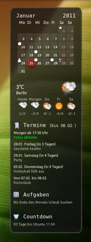

myDesktopCalendar
Dieser Artikel wurde für die folgenden Ubuntu-Versionen getestet:
Ubuntu 16.04 Xenial Xerus
Ubuntu 14.04 Trusty Tahr
Zum Verständnis dieses Artikels sind folgende Seiten hilfreich:
myDesktopCalendar ist ein Kalenderprogramm ähnlich Rainlendar, um einen Kalender direkt in den Desktop-Hintergrund eingebettet anzeigen zu lassen. Es enthält alle nötigen Funktionen, um Termine oder Aufgaben organisieren zu können. Das Programm ist für GTK-basierende Desktop-Umgebungen ausgelegt. Man kann es aber auch ohne Probleme unter KDE benutzen, muss dafür allerdings die Einstellungen manuell vornehmen.
Anstatt die Termine in einem eigenen Fenster zu zeigen, generiert das Programm bei jedem Neustart, beim Ändern der Termine oder in festgelegten Intervallen automatisch ein neues Hintergrundbild und fügt dabei die aktualisierten Daten ein. Auf diese Weise behält man leicht den Überblick über seine Termine, Aufgaben, Geburtstage oder Feiertage. Das ursprüngliche Hintergrundbild wird dabei nicht verändert.
Installation¶
 myDesktopCalendar ist keine freie Software, sondern Shareware und kann ab Juli 2012 über das Software-Center [1] von Ubuntu installiert werden: myDesktopCalendar
myDesktopCalendar ist keine freie Software, sondern Shareware und kann ab Juli 2012 über das Software-Center [1] von Ubuntu installiert werden: myDesktopCalendar
Fremdpakete¶
Der Programmautor stellt Fremdpakete einer eingeschränkten Version als Freeware speziell für ubuntuusers.de zur Verfügung, die man herunterladen und manuell installieren kann. Man lädt sich das entsprechende Paket – passend zur eigenen Systemarchitektur – herunter:
32-Bit: mydesktopcalendar_i386.deb

64-Bit: mydesktopcalendar_amd64.deb
Hinweis!
Fremdpakete können das System gefährden.
Verwendung¶
|  |
| myDesktopCalendar |
Nach der Installation kann das Programm im Startmenü über "Anwendungen -> Zubehör -> myDesktopCalendar" oder mit dem Befehl:
myDesktopCalendar
gestartet werden [2]. Es ist auch möglich, myDesktopCalendar mit einem Kommandozeilenparameter aufzurufen:
mydesktopcalendar -forceQuit
Damit wird das Hintergrundbild aktualisiert und myDesktopCalendar beendet sich wieder. Allerdings stehen dann einige Funktionen, wie z.B. die Weckfunktion und die Erinnerungsfunktion für Termine, nicht zur Verfügung. Sinnvoll bei dauerhafter Verwendung ist die Einrichtung eines automatischen Starts [3] nach der Benutzeranmeldung.
Das Programm ist in verschiedene Bereiche unterteilt. Zum einen wäre da das Kalenderblatt, welches den aktuellen Monat anzeigt. Termine werden in dieser Übersicht als kleine Symbole für den jeweiligen Tag eingefügt, wobei unterschiedliche Ereignisse auch unterschiedliche Symbole haben können. Sind für einen Tag mehrere Termine definiert, wird automatisch ein besonderes Symbol angezeigt.
Der aktuelle Tag kann mittels eines Kreises oder Vierecks markiert werden. In dieser normalen Ansicht kann auch zusätzlich das aktuelle Sternzeichen angezeigt werden. Des weiteren gibt es aber noch die Möglichkeit, das Kalenderblatt als schlichten Zeitstrahl anzeigen zu lassen.
Termine¶
In der Terminvorschau werden alle Termine der nächsten Wochen (in den Einstellungen individuell einstellbar) angezeigt. Neben dem Termin wird angezeigt, wie viele Tage noch bis zu einem Ereignis vorhanden sind (Countdown) und bei Geburtstagen wird das Alter der Person mit angezeigt. Wurde zu einem Termin eine Uhrzeit mit angegeben, kann man sich vor dem Termin zu einem festgelegten Zeitpunkt nochmals erinnern lassen. Termine, die auf einen Tag fallen, werden in einer Liste zusammengefasst angezeigt und sind an einer roten Linie erkennbar. Alle Termine sind aber auch über das Symbol im Benachrichtigungsfeld („Trayicon“) ersichtlich und werden als dort als Tooltip angezeigt.
Import von iCalendar-Dateien¶
Statt der internen Terminverwaltung können auch iCalendar-Dateien (*.ics) importiert und angezeigt werden. Diese Kalenderdateien können entweder von einem Ort im Internet (z.B. Google-Kalender) oder von einer lokal gespeicherten Datei geladen werden. Wenn die Import-Funktion genutzt wird, ist die interne Termin-Funktion deaktiviert.
Aufgaben¶
Unter Aufgaben können langfristige Kurznotizen hinterlegt werden, die kein festes Verfallsdatum haben.
Countdown¶
Mittels des Countdowns können die restlichen Tage zu einem bestimmten Ereignis herunter gezählt werden, das einem besonders wichtig ist.
Wetterbericht¶
Den Wetterbericht kann man in den Einstellungen → Internet → Wettereinstellungen umstellen. Einfach die gewünschte Stadt eingeben und auf Suche drücken. Wurden mehrere mögliche Städte gefunden, kann man die richtige im Menü auswählen.
Weckfunktion¶
Neben diesen Funktionen bietet myDesktopCalendar auch eine Weckfunktion an, die in XX Minuten oder um XX:XX Uhr am selben Tag einen Hinweis ausgibt.
Konfiguration¶
 Die Konfiguration wird mittels Rechtsklick
Die Konfiguration wird mittels Rechtsklick  auf das Symbol im Benachrichtigungsfeld (Trayicon) unter "Einstellungen" vorgenommen und ist in vier Sektionen unterteilt:
auf das Symbol im Benachrichtigungsfeld (Trayicon) unter "Einstellungen" vorgenommen und ist in vier Sektionen unterteilt:
Hinweis:
Grundlage dieser Anleitung ist die Version 0.80 von myDesktopCalendar.
Einstellungen¶
"Sternzeichen": zeigt im oberen Bereich das aktuelle Sternzeichen an
"Kalenderwoche": zusätzlich im Kalender die Nummern der Kalenderwochen anzeigen
"Kalender": zeigt den Kalender an, die eigentliche Hauptaufgabe von myDesktopCalendar
"Wettervorschau": zeigt unterhalb des Kalenders das aktuelle und das Wetter der nächsten 4 Tage an
"Termine": zeigt die eingetragenen oder über iCal-Dateien importierte Termine an
"Aufgaben": zeigt die eingetragenen Aufgaben an
"Countdown": zeigt die verbleibende Zeit und den dazugehörigen Text des eingestellten Countdowns an
"Börsenkurse": zeigt die aktuellen Börsenkurse an
"Countdown-Daten": Datum und ein dazugehöriger Text angeben, der dann im untersten Bereich als Countdown angezeigt wird
"Wetterdaten-URL": wer das Wetter für eine bestimmte Stadt angezeigt bekommen möchte, klickt zuerst auf "Öffne Stadtsuche". Daraufhin öffnet sich im Webbrowser eine Webseite, bei der man dann unter "Wetterbericht suchen für:" den gewünschten Ort eingibt. Anschließend kopiert man die URL aus der Browser-Adresszeile und fügt sie unter "Wetterdaten-URL" ein.
"Zoome Bilder immer auf Bildschirmgröße": das Hintergrundbild wird immer auf die Bildschirmgröße umgerechnet, dabei gehen eventuell die Proportionen des Bildes verloren. Anschließend wird der Kalender an die angegebene Position auf dem Bildschirm gezeichnet.
"Kürze zu große Bilder auf Bildschirmgröße": wenn das Hintergrundbild größer als die Bildschirmgröße ist, wird der obere linke Teil des Bildes, in der Größe der Bildschirmauflösung, genutzt, ist das Hintergrundbild kleiner als die Bildschirmgröße, wird das Hintergrundbild an der linken oberen Ecke beginnend angezeigt. Der Kalender wird an die angegebene Position auf dem Bildschirm gezeichnet.
"Keine Änderungen an den Bildern vornehmen": ist das Hintergrundbild kleiner als die Bildschirmgröße, wird das Hintergrundbild an der linken oberen Ecke beginnend angezeigt. Der Kalender wird an die angegebene Position auf dem Bildschirm gezeichnet. Wenn das Hintergrundbild allerdings größer als die Bildschirmgröße ist, wird der Kalender an die angegebene Position im Hintergrundbild gezeichnet und das Bild danach auf die Bildschirmgröße gestaucht, dabei gehen eventuell die Proportionen des Bildes verloren.
"Transparenz": wie viel vom Hintergrundbild durch den Kalender durchscheinen soll
"Automatische Wallpaper-Aktualisierung": in welchen Zeitabständen die Daten auf das Hintergrundbild gezeichnet und neu geladen werden
"Terminvorschau in Wochen": wie viele Wochen im voraus Termine angezeigt werden sollen
"Benutze jeden Tag einen anderen Hintergrund": sind unter "Wallpaper" mehrere Hintergrundbilder angegeben, kann jeden Tag ein anderes Hintergrundbild benutzt werden.
Erweitert¶
Hier wird unter anderem die Position, an der der Kalender auf den Desktop gezeichnet wird, angegeben. Man muss eventuell ein klein wenig experimentieren, um die passenden Koordinaten zu finden. Die genaue Position des Kalenders auf dem Desktop hängt auch stark davon ab, was man unter "Einstellungen" als Methode für die Anzeige der Hintergrundbilder gewählt hat und wie groß die Hintergrundbilder sind.
Insbesondere bei der Einstellung "Keine Änderungen an den Bildern vornehmen" in Verbindung mit Bildern, die größer sind als der Desktop, kann es zu unerwarteten Ergebnissen kommen.
Börsenkurse¶
Die aktuellen Börsenkurse werden von Yahoo bezogen, allerdings ist es nötig vorher die Symbole der jeweiligen Aktien/Fonds einzugeben. Dazu öffnet man die Kursseite von Yahoo (Klick auf den blauen Text "Öffne Yahoo-Börsenkurse" in den Einstellungen) und sucht nach einer Aktie. Als Beispiel soll hier "Nokia" dienen. Nach der Eingabe des Namens oder ISIN wird auf "Kurs abfragen" geklickt. In der nun folgenden Übersicht wird die gewünschte Aktie bzw. Börsenplatz ausgewählt und die Abkürzung unter "Ticker" in myDesktopCalendar eingetragen. Für das Beispiel Nokia wäre dies "NOA3.DE". Damit die Kurse angezeigt werden, muss unter "Anzeige" die Börsenkurse aktiviert werden.
Synchronisation¶
Will man in myDesktopCalendar statt der internen Termin-Funktion lieber externe Kalenderdaten nutzen, aktiviert man hier "Aktiviere Synchronisation" und fügt zu den "Synchronisations-Quellen" entweder lokale iCalendar-Dateien hinzu oder nutzt zum Beispiel Dateien des Google Kalenders, die man mittels der URL angibt.
Dazu wählt man im Google-Konto unter "Einstellungen -> Kalender" den betreffenden Kalender aus, in dem Bereich "Privatadresse" kopiert man den Link zur iCal-Datei. Diese URL ist eine private URL und nur dem Benutzer bekannt, niemand kann diesen Kalender ohne diese URL aufrufen! Diese URL fügt man in myDesktopCalendar ein.
Hinweis:
Die Synchronisation mit externen Quellen ist inzwischen nur bei einer Spende an den Programmautor möglich.
Wallpaper¶
Hier kann man die Bilder hinzufügen, die myDesktopCalendar als Ausgangsmaterial für Hintergrundbilder nutzen soll. Die hier angegebenen Bilder werden nicht verändert, wenn myDesktopCalendar seine Daten auf ein Bild zeichnet. Das neue Bild wird unter ~/.config/myDesktopCalendar/Wallpaper.png gespeichert.
Traffic protokollieren¶
Ab myDesktopCalendar 1.80 ist es möglich, das Downloadvolumen protokollieren zu lassen. Der Traffic wird dabei in Heute, Gestern, Woche und Monat aufgeschlüsselt. Um die Protokollierung zu aktivieren muss die zu überwachende Netzwerkschnittstelle angegeben werden.
route -n
Die Ausgabe könnte so aussehen:
Ziel Router Genmask Flags Metric Ref Use Iface 192.168.0.0 0.0.0.0 255.255.255.0 U 1 0 0 wlan1 169.254.0.0 0.0.0.0 255.255.0.0 U 1000 0 0 wlan1 0.0.0.0 192.168.0.1 0.0.0.0 UG 0 0 0 wlan1
Der Eintrag ganz rechts unter Iface liefert den richtigen Namen der Netzwerkschnittstelle, in diesem Beispiel wlan1. Diesen trägt man unter Einstellungen → Internet → Downloadvolumen protokollieren ein. Zusätzlich muss in den Einstellungen auch der Punkt Digial-Uhr mit Datum aktiviert werden, damit auf dem Desktop die Anzeige erscheint. Diese wird jede Minute einmalig aktualisiert und zeigt neben dem Traffic auch noch an wie voll die Partitionen / und /home sind, sowie die Uptime des Systems.
Problembehebung¶

Bildschirmhintergrund wird nicht geändert¶
Falls myDesktopCalendar den Bildschirmhintergrund nicht selbstständig ändert oder das Programm unter einem nicht unterstützten Desktop Environment installiert wurde, kann man ab Version 1.10 per Skript manuell dafür sorgen, dass der Bildschirmhintergrund bei Änderungen aktualisiert wird. Dazu muss lediglich ein neues Bash-Skript im Ordner ~/.config/myDesktopCalendar/ unter den Namen ChangeWallpaper angelegt und ausführbar gemacht werden.
myDesktopCalendar führt dann bei jeder Änderung selbstständig dieses Skript aus. Um den Bildschirmhintergrund unter GNOME 3 bzw. der Gnome Shell, Unity, Cinnamon etc. zu ändern, müsste das Skript folgendermaßen aussehen:
1 2 | #!/bin/bash gsettings set org.gnome.desktop.background picture-uri 'file:///home/BENUTZERNAME/.config/myDesktopCalendar/Wallpaper.png' |
wobei BENUTZERNAME noch durch den eigenen ersetzt werden muss.
Oberfläche teilweise auf Englisch¶
Durch einen Fehler in der verwendeten Qt-Version von Ubuntu 12.04 wird myDesktopCalendar teilweise in Englisch angezeigt. Beheben lässt sich der Fehler, indem die Umgebungsvariable LC_ALL mit dem Wert de_DE.UTF-8 definiert wird.
About-Fenster wird bei jedem Start angezeigt¶
Beim ersten Start von myDesktopCalendar wird das "About"-Fenster angezeigt. Um sicherzustellen, dass es auch gelesen wird, muss es mindestens 10 Sekunden geöffnet bleiben. Falls man es innerhalb der 10 Sekunden wegklickt, erscheint es beim nächsten Start erneut. Wen das stört, der möge den Text lesen und sich dabei mindestens 10 Sekunden Zeit lassen.
Unter der GNOME Shell wird kein Trayicon angezeigt¶
Unter der [:GNOME_Shell] wird kein Trayicon angezeigt. Dies betrifft allerdings alle Qt-Programme und nicht nur myDesktopCalendar, sofern man myDesktopCalendar in den Autostart eingetragen hat. Beheben kann man dieses Problem, wenn man myDesktopCalendar zeitversetzt starten lässt. Ein entsprechendes Beispielsskript findet man hier.
Unter Unity werden keine Trayicons angezeigt¶
Ab Ubuntu 11.04 werden in Ubuntu standardmäßig keine Trayicons mehr angezeigt und somit sind nicht mehr alle Programme korrekt bedienbar, sofern man Unity verwendet. Dieses Verhalten lässt sich mit dem Befehl
gsettings set com.canonical.Unity.Panel systray-whitelist "['all']"
ändern und es werden wieder alle Trayicons angezeigt. Ab Ubuntu 13.04 ist dieser Workaround nicht mehr möglich (siehe Unity/Unity Desktop).
Beim Hochfahren des Systems werden keine Wetterdaten angezeigt¶
Dieses Problem tritt vereinzelt immer mal wieder auf. Die Ursache ist, dass zu dem Zeitpunkt, wo myDesktopCalendar gestartet wird, noch keine Internetverbindung vorhanden ist. Beheben kann man dieses Problem sehr einfach, indem man myDesktopCalendar über folgendes Bash-Skript automatisch verzögert starten lässt:
1 2 3 | #!/bin/bash sleep 10 mydesktopcalendar |
Die Zeitdauer von 10 Sekunden kann bei Bedarf variiert werden.
Standby/Ruhezustand¶
Das gleiche Problem tritt nach dem Aktivieren eines Rechners aus dem Standby oder Ruhezustand auf. Entweder aktualisiert man manuell oder wartet (max. 1 Stunde) bis zur nächsten automatischen Aktualisierung.
Die Schrift ist unscharf/ Kalender wird gestreckt angezeigt¶
Je nach Einstellungen vergrößert oder verkleinert myDesktopCalendar das Hintergrundbild auf Bildschirmgröße. Man kann aber auch einstellen, dass das Bild überhaupt nicht in der Größe verändert wird. Sollte die Schrift oder gar der ganze Kalender verzerrt angezeigt werden, so muss man unter "System -> Einstellungen -> Erscheinungsbild -> Hintergrund" den Stil auf "Kacheln" oder "Zentrieren" stellen. Speziell bei Xubuntu und Lubuntu kann man das Schriftbild auch noch anderweitig verbessern, siehe Schriftbild verbessern.
Mehrere Kalender bei Multimonitorbetrieb¶
Bis sich jemand findet, der es besser erklären kann, hier mal ein Textausschnitt aus einem Post von Vegeta:
"Das ließe sich afaik nur unterbinden (sofern deine beiden Monitore unterschiedliche Arbeitsflächen anzeigen), wenn man ein entsprechend großes Wallpaper verwenden würde, das sich über zwei oder mehr Arbeitsflächen zieht und der Kalender so nur auf einer Arbeitsfläche sichtbar ist."
Konfigurationsdateien¶
Die bei einem Rechnerwechsel oder für eine Synchronisation relevanten Dateien befinden sich im Ordner ~/.config/myDesktopCalendar/ und lauten:
Events.dat - Termineinträge
ToDo.dat - Aufgabenliste
TimeTable.dat - Stundenplaneinträge
Wallpaper.png - das gerade verwendete Hintergrundbild mit eingebettetem Kalender
myDesktopCalendar.conf - Einstellungen
myDesktopCalendar mit KDE 4.x benutzen¶
KDE 4 bietet leider keine Funktion an, um das Hintergrundbild extern zu ändern. Es ist jedoch ohne Probleme möglich dies händisch einzurichten. Dazu öffnet man mit einem Rechtsklick auf der Arbeitsfläche --> "Einstellungen" --> "Hintergrundbild auswählen" und wählt dort das Bild ~/.config/myDesktopCalendar/Wallpaper.png aus und klickt auf "OK". Fortan aktualisiert KDE automatisch dieses Hintergrundbild, sobald es von myDesktopCalendar geändert wurde.
Deinstallation¶
Die Deinstallation erfolgt über
1 | sudo apt-get purge mydesktopcalendar |
Danach muss aber noch ein neues Hintergrundbild gesetzt werden, weil sonst weiterhin das bisherige mit dem Kalender angezeigt wird. Wer auch den Ordner mit den Konfigurationsdateien löschen möchte, findet diesen unter ~/.config/myDesktopCalendar
Links¶
myDesktopCalendar - Kalender ähnlich Rainlendar - Diskussion zum Programm im hiesigen Forum
Desktop
 Übersichtsartikel
Übersichtsartikel
- Erstellt mit Inyoka
-
 2004 – 2017 ubuntuusers.de • Einige Rechte vorbehalten
2004 – 2017 ubuntuusers.de • Einige Rechte vorbehalten
Lizenz • Kontakt • Datenschutz • Impressum • Serverstatus -
Serverhousing gespendet von